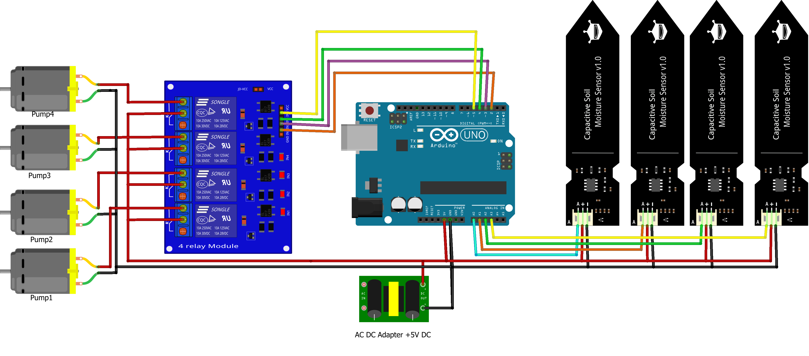

Garduino
C++
Arduino
IoT · Hardware
May 2023 - Present
Self Watering Garden
Related Links: Github Inspiration
This automated garden analyzes and manipulates the soil, maintaining perfect plants in any climate.
Each day, Garduino reads the moisture of the garden soil with the use of capacative soil moisture sensors. After calibrating the reading to determine whether the soil is below the threshold of 30% moisture, it uses a 5V relay to provide water to the garden, enlisting the help of several water pumps. The garden uses multiple sensors to care for each plant individually, triggering specific pumps to water specific plants. Perfect for a garden of any size!
Features
- Arduino Brains of the operation
- Soil Moisture Sensors Daily moisture reading
- 5V relay Power distribution
- Water Pumps Irrigation
Media
This project is still in development. This page will be updated throughout the development process.
Circuit Diagram
